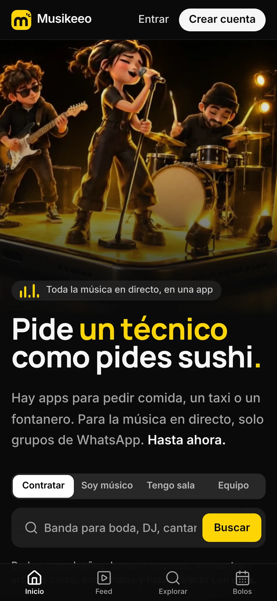
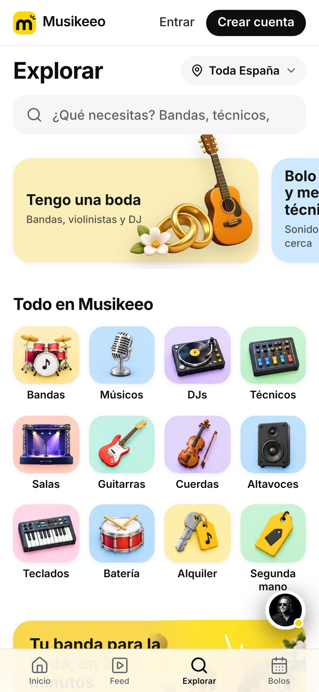
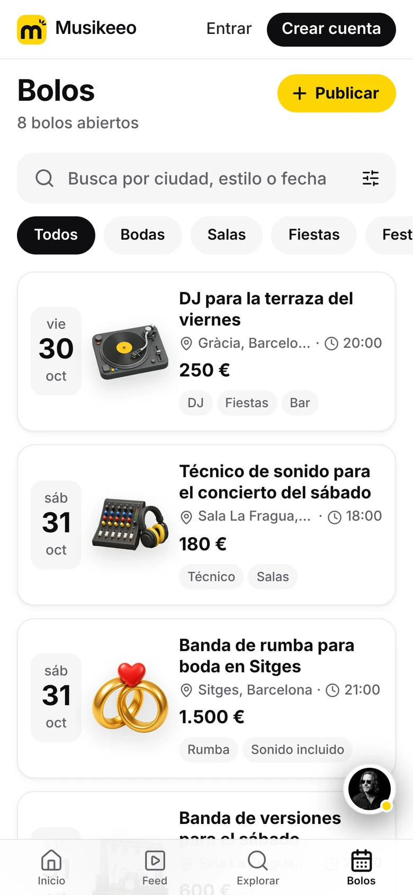
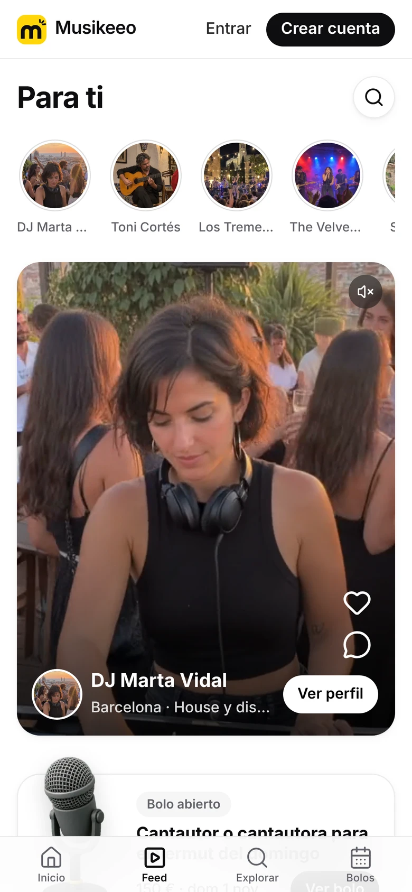
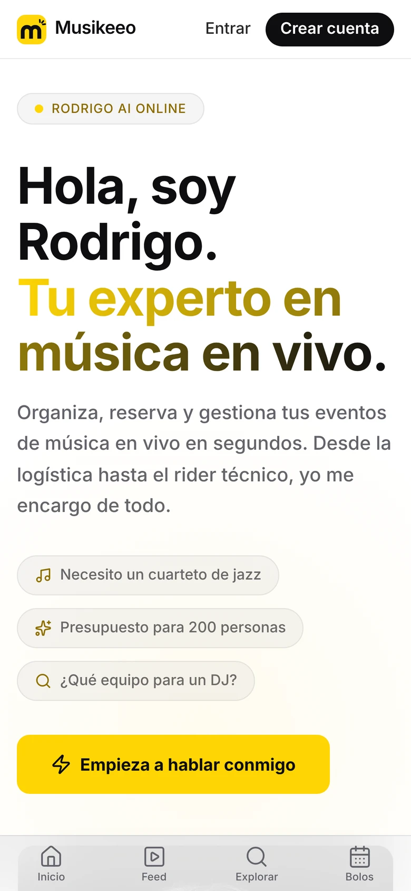
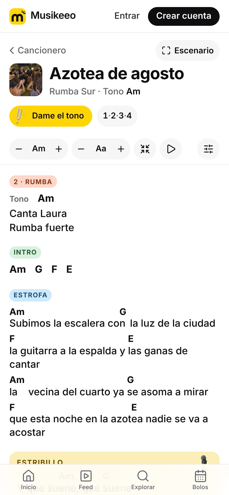
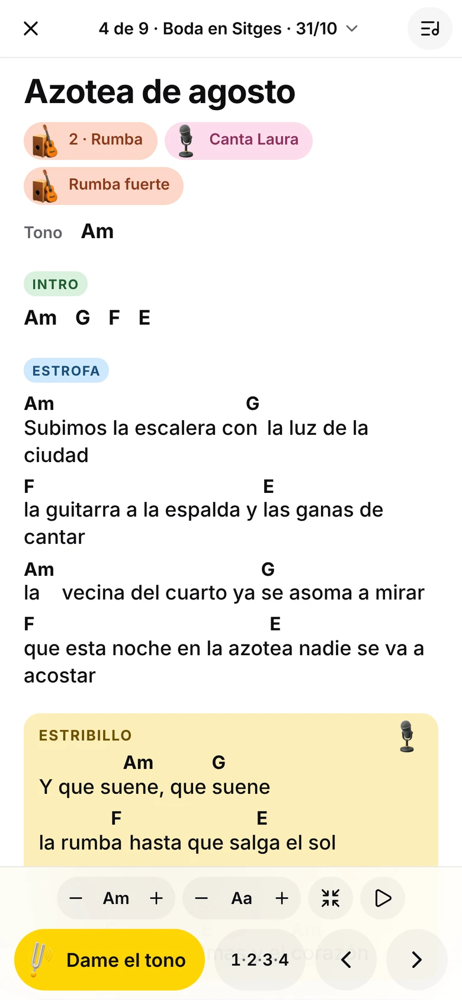
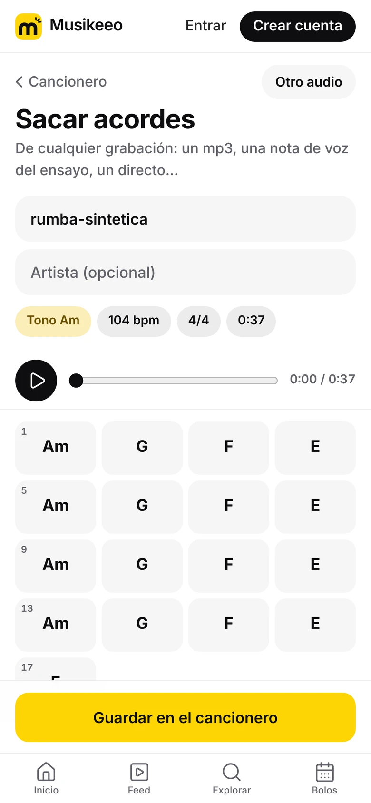

La app de la música en directo: artistas, técnicos, salas, equipo y el cancionero del músico, en un solo sitio. Empezamos en Barcelona.
Presentación para inversores · octubre de 2026 · musikeeo.com

El problema
La música en directo se contrata por WhatsApp.
Quien contrata
Una boda, un bar o una sala no sabe a quién llamar ni cuánto cuesta. Pregunta en grupos y espera.
Músicos y técnicos
Viven del boca a boca. Una baja de última hora se arregla a base de mensajes y favores.
El equipo
Un cable, una correa o un PA para esta noche: las tiendas cerradas y Wallapop a 40 minutos.
Hoy todo está repartido entre WhatsApp, Instagram, Wallapop, bodas.net y el boca a boca. Nadie lo junta.
Musikeeo2
Por qué existe
«Sábado, 21:30. Se me rompe la correa media hora antes del bolo.»
Tres tiendas cerradas y nadie en el bar con una. Acabé tocando con el cinturón de un colega del público. Con Musikeeo, un músico a 600 metros me la habría alquilado en diez minutos.
Víctor Torres · músico de bolos y fundador
Musikeeo3
La solución
Todo el directo, en una app.

ExplorarBandas, DJs, técnicos, salas y equipo cerca de ti.

BolosPublicas tu bolo y te llegan propuestas.

Feed «Para ti»Vídeos y fotos de artistas, con me gusta y comentarios.

Rodrigo, IAPrepara anuncios, bolos y perfiles. Publicas tú.
MusikeeoEn producción en musikeeo.com · sin descargar nada · 4
Nuevo · octubre de 2026
El Cancionero: lo que el músico abre en cada bolo.

En tu tonoLetra y acordes limpios, con cejilla y tamaño a tu medida.

TocarEl repertorio del bolo, deslizando o con pedal. Sin cobertura.

Sacar acordesEl móvil escucha una grabación y te dice los acordes.
Por qué importa
Un músico no entra cada día en un marketplace, pero sí en su cancionero. El Cancionero trae al músico; la red hace el resto.
Víctor lo usó en su bolo del 24 de octubre: una boda con 53 temas.
MusikeeoLas letras las pega cada músico: Musikeeo no publica letras con derechos · 5
Feed «Para ti»
Un feed que aprende lo que te gusta.
Me gusta y comentarios en fotos, vídeos y artistas.
Aprende de lo que ves entero, lo que saltas, los perfiles y los bolos que abres.
Cada perfil ve su propio orden: estilo, ciudad, tipo de contenido y algo nuevo para descubrir.
18 %
de acierto ordenando por fecha, como estaba antes.
34 %
con el algoritmo nuevo tras 14 días (el máximo posible era un 36 %).
Simulación con 8 perfiles de agentes durante 14 días, no con usuarios reales. Detalle en docs/SIMULACION-FEED.md.
Musikeeo6
Por qué ahora
El directo está en máximos y sigue sin herramientas.
807 M€
en entradas de música en directo en España en 2025. Récord, un 11 % más que el año anterior.
175.364
bodas en España en 2024. El 87 % de las parejas contrata DJ.
120.510
conciertos de música popular en 2024, un 9,4 % más.
Y la IA ya permite que publicar un bolo o un perfil cueste un minuto: Rodrigo lo prepara y la persona solo pulsa «Publicar».
Fuentes: APM vía El Debate y Euronews (abr-2026) · INE, Movimiento Natural de la Población 2024 · bodas.net, Informe del Sector Nupcial 2026 · Anuario SGAE vía que.es (nov-2025)
Musikeeo7
Mercado
Solo la música de las bodas mueve unos 160 M€ al año en España.
175.364
bodas al año
×
87 %
con música
×
1.050 €
de música por boda
=
≈ 160 M€
al año
→
≈ 16 M€
con un 10 %
En Cataluña, donde empezamos: 27.836 bodas × 87 % × 748 € ≈ 18 M€ al año, y un 10 % son unos 1,8 M€.
163.000 bares
en España. Cuántos programan directo está por medir.
Unas 300 salas
con programación regular de directo.
32.000 conciertos
en Cataluña en 2025, muchos en fiestas mayores.
Eventos de empresa
13.367 M€ en reuniones y eventos (2023).
Estimación propia con datos de INE e Idescat (2024), bodas.net (gasto medio en música), Hostelería de España, ACCES, Anuario de la Música 2026 y Braintrust. Se valida con el piloto de Barcelona.
Musikeeo8
Cómo gana dinero
Gratis para empezar. Un 10 % cuando se contrata.
Reserva protegida · 10 %
Lo paga quien contrata, como gastos de gestión y garantía. El músico cobra el 100 % de su caché.
Plan Sala · 39 €/mes
Publicar bolos y recibir propuestas sin límite.
Pro · 8 €/mes
Para músicos y técnicos que quieren destacar.
Tiendas · 49 €/mes
Escaparate para músicos de su zona.
Destacados · 3 €
Subir un anuncio o un perfil arriba.
Lo que deja cada contratación
Bolo
Caché
Paga el cliente
Nos queda
Boda
1.500 €
1.650 €
112,80 €
Bolo medio
558 €
613 €
41,92 €
Bar
250 €
275 €
18,80 €
Ya descontados el pago con tarjeta (1,8 %) y un fondo de garantía (0,5 %) para sustitutos y devoluciones. Lanzamos sin comisión: primero que haya bolos, después cobrar. Como referencia, Encore cobra un 20 % y GigSalad entre un 12,5 y un 17 %.
MusikeeoModelo financiero de Musikeeo (docs/pitch) · 9
Competencia
Otros hacen una parte. Nadie lo junta todo en España.
Quién
Qué hace
Cómo cobra
GigSalad · EE. UU.
Artistas para eventos
10-12 % al cliente y 2,5-5 % al artista
Encore · Reino Unido
Músicos para bodas y eventos
20 % con IVA al contratar
GigPig · Reino Unido
Música en directo para bares y pubs
Paga el local · ronda seed de 1,3 M£ en 2024
bodas.net · España
Directorio de proveedores de boda
Suscripción y publicidad del proveedor
WhatsApp y Wallapop
Todo lo demás, a mano
Gratis, sin perfiles ni garantías
Musikeeo · España
Artistas, técnicos, salas, equipo, cancionero e IA
10 % al que contrata y suscripciones
Fuentes: páginas de ayuda de GigSalad (may-2026) y Encore (nov-2025), Hypebot (may-2024), The Knot Worldwide.
Musikeeo10
Dónde estamos
La app está hecha y en producción.
Hecho
Explorar, Bolos, Mercado, Feed, chat y perfiles, en musikeeo.com.
Rodrigo, con IA, prepara anuncios, bolos y perfiles. Nunca publica solo.
Cancionero completo, probado en un bolo real.
Funciona en cualquier móvil sin descargar nada, también sin cobertura.
Lo que falta, dicho claro
Usuarios: empezamos en cero. Lo que ves en la demo es contenido de demostración, y así lo decimos.
Antes de abrir: 20-30 perfiles reales de nuestra red, datos legales y avisos por email.
Pagos protegidos (Stripe Connect) en la siguiente fase.
Musikeeo11
Cómo llegamos
Barcelona primero: los músicos, luego quien contrata.
1 · Los músicos
20-30 perfiles reales de nuestra red: rumba, bodas, versiones y técnicos. El Cancionero, gratis, como gancho para músicos.
2 · Quien contrata
Bodas (ferias y wedding planners), bares y salas de Barcelona, uno a uno. Vídeos cortos con la firma «Musikeeeeeeooo».
3 · Cobrar
Con bolos de verdad, la Reserva protegida del 10 %, el Plan Sala y Pro.
Después: el resto de España, Europa y, más adelante, Latinoamérica.
Musikeeo12
Equipo
Músicos que hacen software.
Víctor Torres
Fundador
Músico de bolos (rumba y bodas) en Barcelona. Producto, marca y marketing. Ha vivido el problema cada fin de semana.
Adrián Rull
Socio · Aether Labs
[Su papel en Musikeeo, en una línea]
David [apellido]
Socio · Aether Labs
[Su papel en Musikeeo, en una línea]
Aether Labs es un estudio de software e IA de Barcelona. Ha construido Artiverse para Bonito Sound y Aura Studio, su propio estudio de contenido con IA.
Musikeeo13
La ronda
Buscamos 350.000 € para lanzar en Barcelona y crecer en España.
350.000 €
Pre-seed, con valoración previa de 2 M€, y un préstamo ENISA de hasta 300.000 €.
En qué se usa
El equipo pasa de 3 a 6 personas, captación en Barcelona y los pagos protegidos.
Escenario base del modelo
Contrataciones
Volumen (GMV)
Ingresos
Año 1
1.124
0,63 M€
0,02 M€
Año 2
6.420
3,6 M€
0,27 M€
Año 3
20.092
11,2 M€
0,95 M€
Rentable en el mes 45 en el escenario base. Son hipótesis del modelo financiero (docs/pitch/modelo_financiero.py), no una previsión cerrada: los supuestos están en el fichero.
Musikeeo14
Conecta. Crea. Suena.
musikeeo.com · Víctor Torres · Aether Labs
La demo de 52 s y la de 17 s enseñan la app tal cual está hoy.